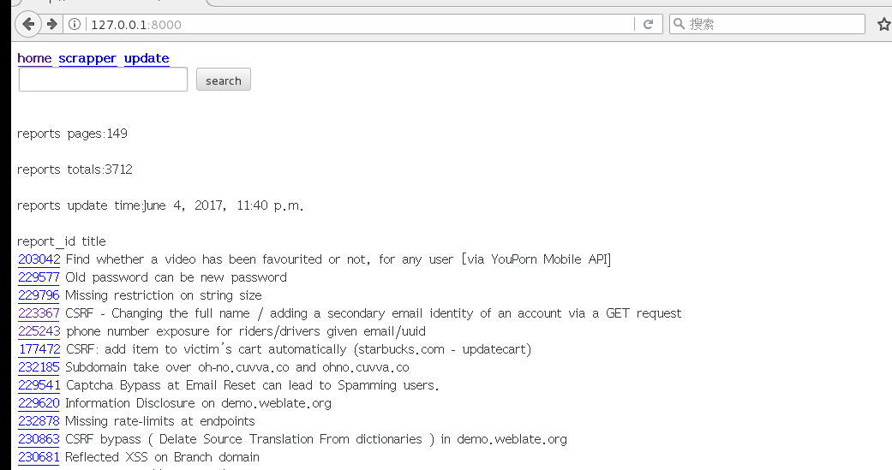
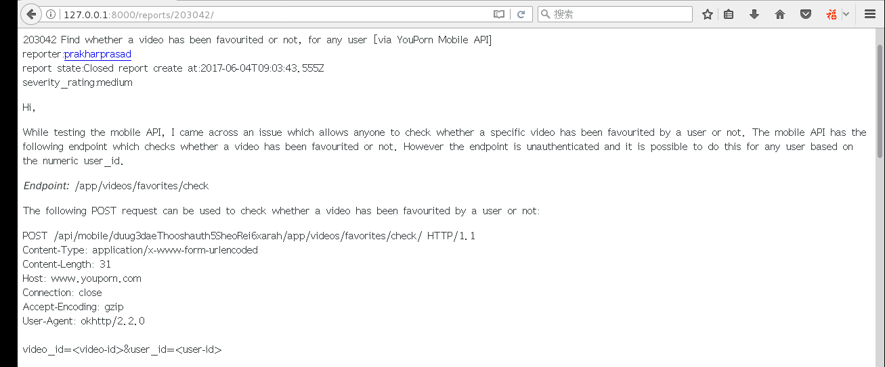
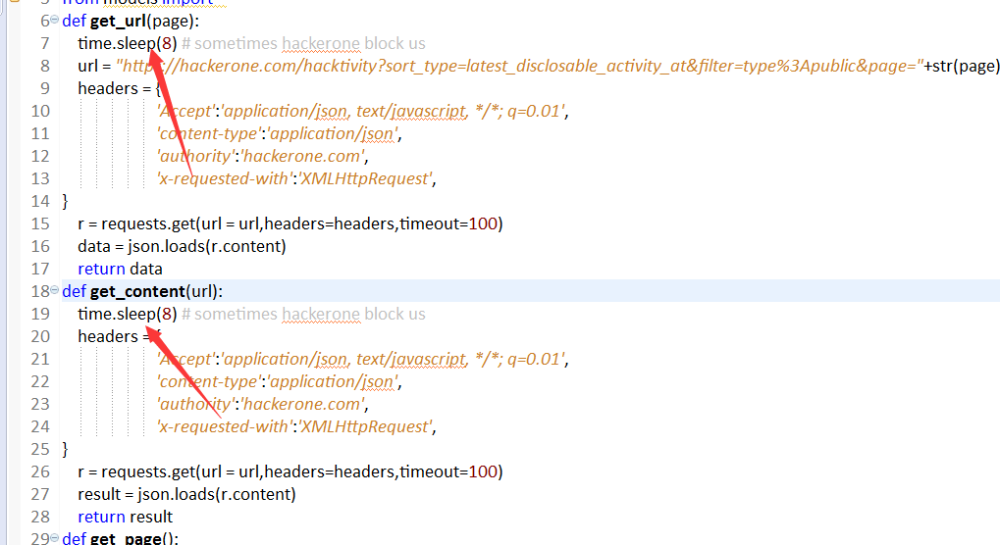

*本文原创作者：陌度，本文属FreeBuf原创奖励计划，未经许可禁止转载
之前在hackerone看报告，但是由于一些问题（你懂的）访问很卡，所以干脆弄一个django离线版，而且比起官网还弄了一个搜索功能，进行报告的筛选。
好了，废话不多说，上地址
https://github.com/yingshang/hack.gitgit clone https://github.com/yingshang/hack.git
[root@localhost hack]# python manage.py makemigrations
[root@localhost hack]# python manage.py migrate
[root@localhost hack]# pip install -r requirements.txt
打开浏览器，http://127.0.0.1:8000/
[root@localhost hack]# python manage.py runserver
Performing system checks...
System check identified some issues:
WARNINGS:
?: (1_8.W001) The standalone TEMPLATE_* settings were deprecated in Django 1.8 and the TEMPLATES dictionary takes precedence. You must put the values of the following settings into your default TEMPLATES dict: TEMPLATE_CONTEXT_PROCESSORS.
System check identified 1 issue (0 silenced).
June 05, 2017 - 13:59:25
Django version 1.9.2, using settings 'hack.settings'
Starting development server at http://127.0.0.1:8000/
Quit the server with CONTROL-C.

http://127.0.0.1:8000/scrapper/ #全部报告抓取
http://127.0.0.1:8000/update/ #更新最近报告
#报告搜索功能
在抓取全部报告的时候，我已经写了过滤，重复的是不会抓取，但是缺点就是要一个报告一个报告的抓取，再判断是否重复

在这里设置等待时间，如果时间太快，容易抓取失败。
在github那里有get_content.json,get_url.json这两个文件，里面有些东西我没加上数据库，因为觉得没必要，假如你要的话，你就按着它的格式扩充。
1. hackerone有些报告有图片，所以图片就是hackerone的数据库，但是大多数报告都是纯文本的，干脆就不筛选
2. 主页报告的分页问题，下一页是没问题，上一页上到第一页就不可以，所以到时直接按home就跳转到第一页
我不会前端，就不要喷我前端不好看，如果有那位兄弟想帮我写好前端，还有，如果有优化的建议，请来联系我。
*本文原创作者：陌度，本文属FreeBuf原创奖励计划，未经许可禁止转载